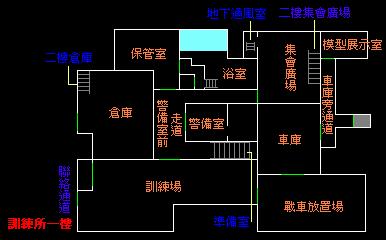
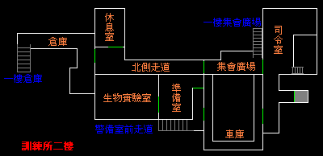
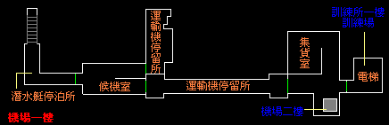
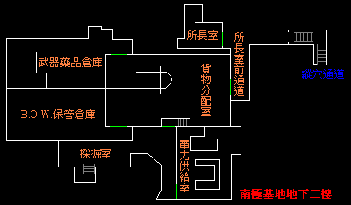
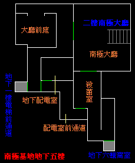
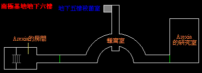
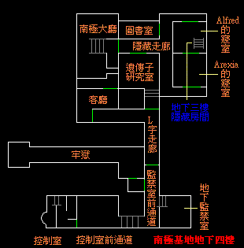

|
惡靈古堡～聖女密碼-----地圖攻略─Chris篇
|
|
Chris一開始在南極基地的地下墓地（地圖略），洞口附近有一株綠色藥草，再往前走幾步會有Rodrigo 被砂蟲吞掉的劇情，但是如果在Claire篇沒有將打火機交給Rodrigo這件事就不會發生。繼續前進在到底 端之前會看到一幅奇怪的壁畫，底端可以拿到十字弓箭、色帶，可以進行存檔和整理道具。 離開地下墓地到鐘乳石洞（地圖略），洞口有藍、綠藥草，沙蟲突然現身，可以選擇逃跑或戰鬥，如 要逃跑則趕緊去按下底端的電梯，等待電梯到達即可；如果之前有Rodrigo被吞掉的事件，打倒沙蟲可 以從他吐出來的Rodrigo身上拿到打火機，拿打火機回地下墓地奇怪的壁畫前使用，可以拿到衝鋒槍。 電梯前有十字弓箭、手槍子彈。
 從電梯出來是訓練所一樓的車庫 ，角落有手槍子彈，前往戰車放置場。在戰車的後端有一個按鈕，按 下後出現升降梯，這裡有手槍子彈和十字弓箭，如果Claire已經拿走，就不會出現。 搭乘升降梯到地 下一樓戰車下通道。 （地圖略）戰車下通道轉角處有散彈、藍綠色藥草，盡頭的門前有一個電瓶，還不要拿取，先進入旁 邊的房間------所長室。所長室裡有綠藥草、散彈、藍色藥草盆、手槍子彈、色帶、硫酸彈，另外注意 牆上的那幅畫，根據提供的四個線索，炎之河、森林燒盡、流至大海、大地呼號，四個所代表的顏色 去開這裡的四個抽屜，成功後可以拿到手槍模型，失敗重來即可。這個手槍模型無法使用，在本篇遊 戲中沒有任何功效，但是破關後的隱藏遊戲中會出現Steve這個角色（請參考隱藏模式）。離開所長室 後去拿電瓶，會衝出兩隻蜘蛛，不要理會回頭搭升降梯回戰車放置場。 拿電瓶到車庫旁升降梯使用，到訓練所二樓車庫。
 上車庫二樓左側有強化耐蝕合金缺點報告、藥品庫的鑰匙。前進到司令室，發生劇情，這個時候訓練 所會開始出現偵測機器人，司令室附近有綠色藥草、榴彈。搭電梯到地下一樓南側地下水道。
在南側地下水道可以先去打開往戰車下通道的路，以後會比較方便（但必須先讓梯子升起）。南側地 下水道有散彈槍、手槍子彈、色帶、紅藥草兩株，如果拿走散彈槍的話梯子就會升起，以後就必須繞 比較長的路，可以自己考慮是不是要這個時候拿。在B.O.W.保管室樓梯前有綠色藥草，上樓操作控制 面板降下冷凍艙可拿到自動步槍子彈50%。然後往升降梯放置室。 來到升降梯放置室先往左轉，底部可以找到十字弓箭，而前方地上閃閃發亮的手把，要拿之前請先做 好準備，會有兩隻獵人跳出來。進入病毒保存庫，裡面有散彈、手槍子彈、藍紅藥草，在藥品保管箱 使用藥品庫的鑰匙，然後設定溫度，溫度和訓練所完成日（12月8日）相同，成功後拿到溶解劑Σ。 回到二樓集會廣場，會發現老鷹徽章被水沖走了。再到二樓的準備室，這裡可以拿到十字弓箭、腰包 ，如果Claire沒有拿走十字弓和便條紙 的話，這裡也會出現。從準備室的另一個門出去，在通往車庫 二樓的門使用把手，然後在這一端的車庫二樓兩側有戰車模型、手槍子彈。 尋原路回一樓車庫旁通道，角落有手槍子彈，進入模型展示室，有色帶和打字機，將戰車模型放入訓 練所模型中，可在打開的機關拿到關於隱藏通道的紀錄、升降梯鑰匙。 到B.O.W.保管室會發生劇情，結束後出現Bander，不打也可以。到地下一樓的升降機放置室，使用升 降機鑰匙，搭乘升降機到一樓倉庫。一樓倉庫貨物箱上有十字弓用火藥，推推箱子才能拿到，Claire之 前沒有拿十字弓箭的話這裡也會看到。 從倉庫到訓練場，這裡要小心獵人的攻擊，附近有散彈和十字弓箭可以拿，然後搭電梯往機場一樓電 梯。
 在機場電梯這裡的道具是和前篇互通的，有手槍子彈、榴彈、綠色藥草，被Claire拿走就不會出現。 在集貨室小心獵人的攻擊，Claire沒有取走的十字弓箭在這裡也會出現，之後搭上升降梯往機場二樓。
機場二樓集貨室經運輸機停留所，到候機室，一進門右手邊角落有急救噴霧，在這裡最重要的任務就 是操作油壓系統，共有三個按鈕，分別是3、5和油槽按鈕，只要下方油槽剛好到達紅線再按下油槽 按鈕即可，成功後原本在一旁動也不動的殭屍會復活，他們所在的地方有散彈，如果覺得不需要可直 接離開。 回到一樓往候機室，可取得色帶、手槍子彈。進入運輸機停留所，這裡有獵人攻擊，關閉面板的電源 ，拿走之前Claire留下的空軍之證、海軍之證、陸軍之證。 重要道具到手後，回訓練所地下一樓，到用品倉庫。這裡可以改造手槍，另外有道具溶解劑α、手槍 子彈、硫酸彈，將溶解劑α和之前取得的溶解劑Σ調和。 接著就是到訓練所一樓模型展示室，使用剛剛到手的三個重要道具，會出現一條秘密通道（地圖略） 。秘密通道中有綠色藥草、榴彈，繼續往前可到達北側地下水道（地圖略）。北側地下水道有藍、 綠藥草，手槍子彈。水池有一隻白化山椒魚駐守，他所在的水池中央有老鷹家徽，可以選擇直接衝下 去拿或是等待他靠近池邊時再攻擊。取得老鷹家徽後使用調和過的溶解劑溶解。 帶著溶解過的老鷹家徽回到之前去過的戰車下通道，打開底端的門。
劇情結束後Chris置身於南極基地地下一樓的機庫，要小心觸手攻擊。 在縱穴通道先前往地下二樓的所長室前通道。
 所長室前通道有一盆藍色藥草盆，進入所長室。所長室裡有打字機和道具箱，在櫃子前使用溶解過的 老鷹家徽，可以取得Alfred的日記、文鎮、色帶，桌上有Alexander的手記，另外這裡的道具都是和前篇 相通的，有十字弓箭、色帶、綠色藥草等物品。 到地下一樓的作業員室，道具也是和前篇相通，有十字弓用火藥、色帶、手槍子彈、急救噴霧、地圖 、作業員的日記，Chris篇多出一個榴彈。 到貨物分配室，這裡因為都結冰了所以可以在冰上自由通行。先到採堀室去取得八角活門轉盤，然後 再到金屬加工室，在被圍起來的小空間裡拿到散彈、鋁合金製手提箱，使用開鎖道具打開可得到軍用 手槍子彈，這裡還有前篇的道具藍、綠藥草，手槍子彈、色帶。 到電梯前通道，要小心獵人的攻擊，因為這條路很小而且還要回來，所以最好把獵人解決了。走到底 部搭乘電梯到地下五樓大廳前庭。
 到達大廳前庭後直接前往地下配電室，使用八角活門轉盤接通電流，再打開電源開關，配電室裡有打 字機和道具箱，還有散彈、色帶、手槍子彈，藍、綠色藥草。 電源打開後到殺菌室。在殺菌室大廳有一尊石像，有玩過一代的人應該很熟悉，把石像推到矮櫃旁， 會因為地板塌陷使石像陷入，就可以拿到石像上的南極研究所的地圖。矮櫃上有手槍子彈、散彈。 往殺菌室裡面走，會有一個也似曾相識的老虎石像，把他的左右眼寶石分別拿下，可以在石像後面取 得軍用手槍子彈、轉接頭，將轉接頭和八角活門轉盤組合，成為四角活門轉盤。 搭電梯往地下六螻蟻窩室。
 蟻窩室中央有翅膀飾物，在Alexia的研究室和房間門前都有綠色藥草。先往Alexia的研究室。 Alexia的研究室中共有手槍子彈兩副、藍綠色藥草、女王蟻研究報告書。拿完後到Alexia的房間。 進門右手邊監視器面板上有病毒研究報告書，平台上培養艙的右側有個操作台，調查後得到四個圖案 以及「光和影」的提示，對照文鎮後發現密碼是雙A、王冠、紅心、黑桃，然後放入之前在所長室取 得的文鎮，培養艙會升起一個冷凍管，裡面是Alfred的屍體，調查拿到Alfred的戒指，再調查一下Alfred 的戒指可以取得Alfred的寶石。 帶著滅火器空瓶、四角活門轉盤前往地下一樓實驗體水中保管室。打開水箱旁邊的藍色按鈕，會升起 滅火劑，可以拿滅火器空瓶補充，接著爬上梯子，使用四角活門轉盤將水箱裡的水放掉，爬進水箱裡 拿起重機啟動鑰匙，注意會有獵人偷襲。 搭乘升降梯到地下二樓武器藥品倉庫（以後再去也可以），使用滅火器撲滅擋路的火，有左輪手槍可 拿，再往內可以拿到火藥引信和手槍子彈，在鐵櫃前裝上火藥引信用打火機引爆，可拿到自動步槍。 （沒有打火機的話，這個步驟請略過） 到地下一樓的貨物分配室，貨物分配室中有一間小小的操作間，在此使用起重機啟動鑰匙，中間的冰 層會升起Alexander的屍體，Alexia也會出現，起後大蜘蛛便會現身阻擾玩家。不要理會大蜘蛛的存在 ，趕緊去調查Alexander附近閃閃發亮的東西吧，得到Alexander的耳環，之後調查這個耳環，得到 Alexander的寶石，重要道具到手後就跑吧。 回到地下五樓的大廳前庭，在水池附近有兩隻翅膀飾物，門旁有兩株綠色藥草。進入南極大廳，先上 樓，可以先在樓梯中央的圖畫使用Alfred的寶石和Alexander的寶石，在樓上走道可以找到一把野戰刀， 然後回一樓的樓梯後方看到Claire受困，使用野戰刀幫助她脫困。 如果在前篇的最終戰時Claire中了Alexander的毒，此時就必須回到地下二樓武器藥品庫拿血清回來幫她 解毒（必須先幫Claire脫困武器藥品庫才會出現血清），如果之前沒有中毒則可以免去這一個步驟。 解救完Claire後，Alexia出現，使兩人分隔兩地，角色切換成Claire。
 Claire從南極大廳到客廳，客廳裡有紅綠藥草各一，手槍子彈、散彈，在這裡的道具箱和Chris的是相通 的，如果裡面有散彈槍的話把他拿出來，推開旁邊的書櫃，使用散彈槍，在打開的暗格裡可以拿到火 炎彈和榴彈（如果散彈槍在Chris那裡之後再來拿也可），拿完了別忘了取走散彈槍。在這裡建議把所 有強力武器都留下來不要帶在身上，留著護身的手槍即可。 在Ｌ字走廊上有觸手擋路，把他們一一解決掉吧，在倒數第二個置物櫃下面有榴彈，留給Chris拿就好 ，到監禁室前通道。 上地下監禁室拿取大砲附近的保全系統檔案，然後調查大砲會掉出一個水晶球，將水晶球放在吊石下 ，小心不要被壓到了，接著在壓碎的水晶中有保全系統卡片。吊石後的獄中只有十字弓箭，如果要拿 的話建議在還未啟動吊石前拿。 使用保全系統卡片打開通往牢獄的門，在進入之前請先確保身上至少帶有恢復藥，進入後會看到Steve 的變異，動畫結束後趕緊轉身跑跑跑，只要被打到一下就立即恢復體力，能活著跑到門邊就算成功了 。成功後請看一段動人的劇情動畫。 回到Chris，Wesker突然出現和Alexia展開一場驚為天人的決鬥，沒料到Wesker竟然先落跑，所以Chris就 必須獨自面對Alexia。勝利後拿到Alexia的頸飾，調查Alexia的頸飾後得到Alexia的寶石。 在大廳中央的圖畫上使用Alexia的寶石、Alfred的寶石、Alexander的寶石，就會打開一條隱藏通路，通 往地下四樓隱藏走廊。 進入圖書室拿最重要的殺菌室的鑰匙，這裡另外還有急救噴霧、色帶，並且可以進行紀錄。 回到南極大廳打開通往殺菌室的門，然後到地下配電室關掉電源，到殺菌室把老虎石像上的紅、藍寶 石都取下（因為沒有電源石像不會轉動），再次回到隱藏走廊到Alfred的寢室（門前有綠色藥草）， 經過這裡到Alexia的寢室。 在Alexia的寢室中調查音樂盒，放上紅寶石後拿到音樂唱盤。回Alfred的寢室，同樣調查音樂盒，放上 藍寶石後再放入方才取得的音樂唱盤，在床上即會出現通往地下三樓隱藏房間的梯子。 隱藏房間（地圖略）中有綠色藥草、手槍子彈，在桌上的盆栽中有蜻蜓飾物。 接著到遺傳子研究室，此處上層有聖女密碼報告書、綠色藥草，下層有手槍子彈、散彈，和翅膀飾物 ，將一路上取得的四個翅膀飾物和蜻蜓飾物組合，得到金蜻蜓。從另外一扇門離開到Ｌ字走廊。 走廊上可以順便帶走之前沒拿的榴彈，回客廳整理裝備準備最後一戰，道具欄留下一格。 在牢獄前和Claire會合，從她手上拿到保全系統卡片。在控制室前通道使用金蜻蜓打開門，控制室上層 的自爆裝置控制台用保全系統卡片並輸入密碼「Veronica」即完成自爆啟動，出門回到控制室前通道時 碰上變異的Alexia要襲擊Claire，趕緊舉槍給予傷害，如果動作太慢讓Claire被擊中遊戲就結束了。 給予傷害後最終的戰鬥開始了，拿出強力武器拼命攻擊，直到她變身最後一種型態，也就是飛行的型 態時去調查中央的能源砲，並使用能源砲將她擊成碎片。 遊戲到此結束了，Chris的危機仍持續存在著........
（未經同意禁止轉載） |
惡靈深淵Biohazard Abyss http://98.to/coolbio